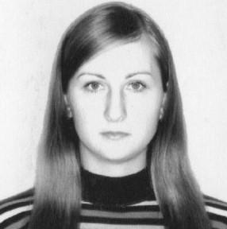

Сведения о себе
Год и место рождения: 08.12.1986 г.
город Красноярск
Национальность: Русская
Семейное положение: замужем
Дети: есть, дочь 11 лет
Цель
Получение должности Frontend разработчика
Образование
- 2007 – 2011 г.г. «Сибирский Государственный Аэрокосмический Университет им. академика М. Ф. Решетнева».
Специальность: «Бухгалтерский учет, анализ и аудит».
Квалификация:Бухгалтер-экономист.
Диплом с отличием.
- 2004 – 2007 г.г. «Красноярский электромеханический техникум».
Специальность: «Экономика и бухгалтерский учет в промышленности».
Квалификация: Бухгалтер.
Диплом с отличием.
Опыт работы
- 2007 – 2009 г.г.
ИП Тимошкова В.О. - бухгалтер
- система налогообложения ЕНВД
- сдача налоговой отчетности, отчетность в фонды
- работа с бланками строгой отчетности
- ведение книги доходов и расходов
- Сентябрь 2009 декабрь 2009 (срочный трудовой договор) ООО «Ленд Ровер Центр Форпост» - бухгалтер
- учет ТМЦ, поступление, перемещение, списание материалов
- проведение инвентаризации
- обработка первичной документации
- работа с поставщиками и подрядчиками (акты сверок)
- авансовые отчеты
- Март 2010-Май 2020
Индивидуальный предприниматель Пиго Т. А.
- Январь 2014 - Октябрь 2014
ООО «КрасГеоРесурс» - Главный бухгалтер
Интересы и увлечения
Занимаюсь спортом, присвоено звание Кандидата в мастера спорта. Увлекаюсь шитьем.
Дополнительная информация
- Владение ПК – уверенный пользователь: MS Office (Word, Excel, Access, PowerPoint), Google, 1С.
- Успешно прослушала учебно-практический тренинг 1С: Бухгалтерия, 1С: Зарплата и Кадры, 1С: Торговля и Склад.
- Успешно прослушала учебно-практический тренинг Владилена Минина HTML & CSS − это первый шаг, чтобы стать IT-разработчиком.
- Прохожу обучение в он-лайн школе Udemy, полный курс по JavaScript + React - с нуля до результата.
- Английский язык - базовый уровень.
- 2009 г. Окончила курсы подготовки водителей. Получила водительское удостоверение категории «В».
Деловые качества
Ответственная, аккуратная, быстро усваиваю новую информацию, пунктуальная, коммуникабельная, исполнительная.